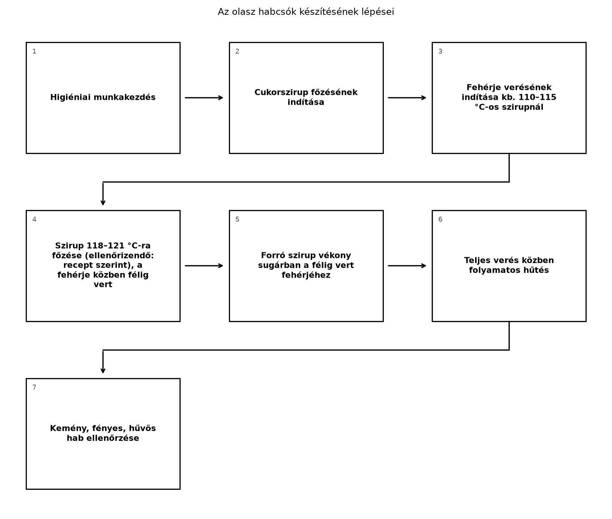

A cukrászműhelyben két visszatérő feladat szinte minden nap előkerül. A felvert tortalapokat (piskótát) meg kell áztatni, hogy szaftosak legyenek, a díszítéshez pedig olyan kemény, fényes habot kell készíteni, amely órákig megtartja a formáját. Az elsőhöz áztatószirup kell, a másodikhoz főzött cukros tojáshab, azaz olasz habcsók. Ha a szirup hőfoka, cukorkoncentrációja vagy a becsorgatás üteme hibás, a piskóta elázik, a hab folyik, csomós vagy kristályos lesz. Ebben az alfejezetben a hígító cukoroldatot, az áztatószirupot és a tojáshabos készítmények cukorfőzetét tanuljuk meg lépésről lépésre, mérésekkel és számításokkal.
Képzelj el egy műhelyt a reggeli termelés idején. Az egyik tálban cukorszirup forr; a refraktométer 60 Brix körüli értéket mutat. A másik munkaasztalon a habverőgép fehérjét ver; a cukrász vékony sugárban, folyamatos verés mellett 118 °C körüli szirupot csorgat bele. A hab térfogata nő, fényes lesz, és a végén kemény csúcsot húz. Alatta a hűtőben a korábban elkészült habcsók hűl, mert csak hidegen marad stabil.
Az alábbi folyamatábra az olasz habcsók készítésének fő lépéseit mutatja; a technológiai lapnál részletesebben is visszatérünk rá.

A szöveges leírás: a fehérjét félig verjük, a forró szirupot vékony sugárban hozzáöntjük, majd tovább verjük, amíg a hab ki nem hűl és kemény nem lesz. A folyamat kulcsa, hogy a szirup hőmérséklete elég magas legyen a hab stabilizálásához, de ne égesse meg a fehérjét.
Definíció. A hígító cukoroldat olyan cukor–víz oldat, amelyet bevonóanyagok, leggyakrabban fondán hígítására használunk. A cél az, hogy a fondán bevonásra alkalmas folyósságot kapjon, miközben megtartja fényét és kötését. A hígító oldat jellemzően 40–60 tömegszázalékos cukortartalmú, de a pontos értéket a felhasználás és a fondán alapreceptje határozza meg (ellenőrizendő: a gyártói adatlap vagy a fondánrecept szerint).
Definíció. Az áztatószirup olyan ízesített vagy ízesítetlen cukoroldat, amellyel felvert, gyakran piskóta tésztából készült lapokat locsolunk, hogy azok szaftosak legyenek, és a töltelékkel együtt harmonikus ízt adjanak. Az áztatószirup átlagos cukortartalma 50–65 tömegszázalék; a gyakorlatban gyakran 1:1 arányú cukor–víz oldatból indulunk, és beforralással vagy hűtés utáni hígítással állítjuk be a kívánt édességet.
Definíció. Az olasz habcsók (meringue italienne) olyan tojáshab, amelyet úgy készítünk, hogy a félig felvert tojásfehérjéhez forró, 118–121 °C körüli cukorszirupot öntünk vékony sugárban, folyamatos verés mellett. A forró szirup a fehérjét részben hőkezeli, a cukor pedig stabilizálja a habot. Az olasz habcsók kemény, fényes, és jól használható díszítésre, krémek alapjául, valamint sütés nélküli desszertekhez, parfékhoz.
Szabály. A tojásfehérjéhez mindig tiszta, zsírmentes edényt és habverőt használjunk. Már kis mennyiségű tojássárgája vagy zsiradék is gátolja a habképződést. A fehérjét közepes (félig vert) fokozatig verjük, mielőtt a szirupot hozzáadnánk; a túl keményre vert habba nehezebb egyenletesen belekeverni a forró szirupot.
Szabály. A forró szirupot soha ne öntsük egyszerre a habba. Vékony sugárban, az edény fala mentén vagy a habverő közelében csorgassuk, miközben a gép vagy a kézi habverő folyamatosan, közepes fokozaton dolgozik. Ha a szirup túl gyorsan kerül be, csomós, égett fehérjedarabok keletkezhetnek.
Biztonsági korlát. A cukorszirup 100 °C feletti, súlyos égési sérülést okozhat. A műveletet tanműhelyi vagy üzemi környezetben, oktatás után és felügyelet mellett végezzük. A forró edényt száraz konyharuhával, és nem vizes ronggyal fogjuk meg. A szirupot ne kóstoljuk meg közvetlenül a forralóedényből, és ne hajoljunk a gőz fölé.
A fondán melegítésekor (lásd a Fondán melegítése, hígítása és felhasználása bevonásra alfejezetet) gyakran nem tiszta vizet, hanem cukorszirupot használunk, mert így elkerüljük a bevonat túlzott hígulását és fénytelenedését. A hígító oldatot egyszerűen, 1:1 arányú cukor–víz oldatból is elkészíthetjük, amelyet felforralunk, és 25–30 °C-ra hűtünk felhasználás előtt (ellenőrizendő: a fondán receptje szerint).
Az áztatószirupot célszerű 50–65 tömegszázalékosra készíteni. Ha túl híg, a piskóta elázik, ha túl sűrű, ragacsos marad. A jellegzetes ízeket a főzés után, hűtés közben vagy már lehűtött állapotban adjuk hozzá, hogy az alkohol és az aroma ne forrjon el.
Ízesítési példák (25 °C körüli sziruphoz, 1 kg piskóta áztatásához):
| Ízesítő | Mennyiség (g) | Megjegyzés |
|---|---|---|
| Rum vagy rumaroma | 20–40 | Alkoholtartalommal; gyermektermékbe nem javasolt (ellenőrizendő: tájékoztatási szabály) |
| Kávékivonat vagy erős presszókávé | 50–80 | Cukorral együtt főzhető vagy hűtve keverhető |
| Vaníliakivonat / vanillincukor | 5–15 | A vanillin feloldódását segíti a meleg szirup |
| Citrom- vagy narancshéj | 5–10 | Reszelve; csakis kezeletlen, élelmiszer-biztonságos héj (ellenőrizendő: növényvédőszer-mentesség) |
| Likőr (pl. narancslikőr, mandulalikőr) | 20–50 | Alkoholos; gyermekterméknél kerülendő |
Szabály. Az áztatószirupot ne locsoljuk forrón a piskótára. A töltelék elolvadhat, a lap széteshet. A szirup 30–35 °C alatt, de még folyékony állapotban adagoljuk; a pontos hőfok függ a tölteléktől (ellenőrizendő: technológiai lap szerint).
Az olasz habcsók klasszikus aránya: 1 tömegrész tojásfehérjéhez 2 tömegrész cukor és 0,6 tömegrész víz. A cukorból és vízből szirupot főzünk, amelyet 118–121 °C-ra melegítünk (kézi próbája a lágy golyó és a kemény golyó határa; lásd a Cukorfőzési fokok és kézi próbák alfejezetet). A hőmérsékletet digitális vagy cukorhőmérővel ellenőrizzük; a 118 °C alatti szirup lágy habot ad, a 121 °C feletti szirup a habba csorgatva kemény cukorszálakat, csomókat képezhet (ellenőrizendő: a recept és a berendezés szerint); a cukor karamellizációja csak kb. 160 °C felett indul.
A műveleti sorrend:
A 4. lépés fogását az ábra mutatja: a szirupot vékony sugárban, a habüst falára öntjük, hogy a falon lefolyva a habverő pályáján kívül érje a habot; hőálló kesztyűben, a kiöntőcsövet a testünktől elfordítva, a védőrács betöltőnyílásán át. Ha a szirup a forgó habverőre ömlik, a cukorszálak szétfröccsennek (égés), a falra száradnak, és a hab csomós lesz.
Higiénia. Az olasz habcsók készítésénél a fő kockázat a nyers tojásfehérje. Az olasz habcsók nyersen kerül a tortára, vajkrémbe, parféba, ezért csak pasztőrözött tojásfehérjét (hűtve tárolt tojástermék) használunk. A forró szirup hőkezelést jelent, de a hab maghőmérséklete nem feltétlenül éri el a 70 °C-ot, ezért a nyers fehérjével készült habcsók nem tekinthető pasztőrözöttnek; ez kötelező tanulási szabály. Friss tojásfehérje csak olyan változatnál jöhet szóba, ahol a habot utólag sütjük vagy szárítjuk (habcsókkorong), nem a nyersen felhasznált olasz habcsóknál (ellenőrizendő: NÉBIH-útmutató, üzemi HACCP-terv). A kész habot 2 óránál tovább ne tároljuk szobahőmérsékleten; hűtve legfeljebb a technológiai lap szerinti ideig, általában 24 óráig (ellenőrizendő: HACCP-terv és gyártói adatlap).
A hígító oldat, az áztatószirup és az olasz habcsók mennyiségét is anyaghányad-számítással állítjuk be. A fő összefüggés a keverési mérleg:
és a koncentráció:
Ahol a kész oldat tömege, a benne oldott cukor tömege, a víz tömege.
1. Számítási példa – 60 tömegszázalékos áztatószirup készítése
Adott: 2,0 kg kész áztatószirupot szeretnénk, 60 tömegszázalékosra. Mennyi cukor és víz kell?
Keresett: , .
Képlet és behelyettesítés:
Ellenőrzés: kg; , ami megfelel.
2. Számítási példa – Hígító oldat utólagos hígítása
Adott: 0,80 kg 60 tömegszázalékos szirupot szeretnénk 45 tömegszázalékosra hígítani. Mennyi vizet adjunk hozzá?
Keresett: .
Képlet és behelyettesítés: először a cukortartalom:
A hígított szirup tömege:
A hozzáadandó víz:
Ellenőrzés: 0,48 kg cukor / 1,07 kg szirup = 0,4486, azaz körülbelül 45%; a kerekítésből adódó eltérés elfogadható.
3. Számítási példa – Olasz habcsók anyaghányagja
Adott: 240 g tojásfehérjéhez klasszikus arányt használunk: 100 g fehérjére 200 g cukor és 60 g víz. Mennyi cukor és víz szükséges, és mekkora lesz az elméleti teljes tömeg?
Keresett: , , .
A szorzószám:
Így:
Elméleti összes tömeg:
A valós kész tömeg kisebb lehet, mert a szirup főzése során víz párolog el. 118–121 °C-ig a 144 g vízből kb. 75 g párolog el: a szirup szárazanyag-tartalma kb. 87,5%, tömege , így a kész hab kb. (a pontos veszteséget a berendezés és a főzési idő határozza meg; ellenőrizendő: mérés a műhelyben).
Az alábbi Technológiai lap az olasz habcsók készítésére szolgál; a hígító oldat és az áztatószirup készítése a lap előtti leírásban szerepel.
Technológiai lap.
| Nyersanyag | Mennyiség (g) | Megjegyzés |
|---|---|---|
| Tojásfehérje, pasztőrözött (hűtve tárolt tojástermék) | 240 | Félig vert állapotig |
| Kristálycukor | 480 | A sziruphoz |
| Víz | 144 | A sziruphoz |
| Összesen | 864 | Elméleti tömeg; főzési veszteség miatt a kész tömeg kisebb |
A hígító oldat és az áztatószirup minőségét elsősorban refraktométerrel mérjük; a Brix-érték tájékoztat a cukortartalomról. A szemrevételezéskor az oldat legyen tiszta, szirupos, idegen anyagtól mentes. Az áztatószirupnál kóstolással ellenőrizzük az édességet és az ízesítést; figyeljünk arra, hogy a kóstoló edény tiszta legyen, és ne kerüljön vissza a szirupba.
Az olasz habcsóknál a minőségi jellemzőket a technológiai lapban foglaltak szerint vizsgáljuk. A hab térfogata jól láthatóan nőjön; a kész hab merev csúcsot húzzon, amely nem hajlik el. A hab fénye a cukor megfelelő oldódását és a finom kristályszerkezetet jelzi. Ha a hab tompa, fakó, a cukor nem oldódott fel teljesen, vagy a fehérje túl magas hőt kapott. A hőmérséklet-ellenőrzéshez tisztított, fertőtlenített szúró hőmérőt használjunk.
Egy esküvői tortához olasz habcsók alapú vajkrémet kellett készíteni. A cukrász a reggeli műszakban 240 g pasztőrözött tojásfehérjét félig vert, majd 480 g cukorból és 144 g vízből szirupot főzött. A hőmérő 121 °C-ot mutatott, amikor a szirupot vékony sugárban hozzáöntötte a fehérjéhez. A hab szép fényes, kemény lett. A vajkrém készítésekor azonban a kész habot verés nélkül 40 percig hagyták állni a meleg műhelyben; a hab vizet eresztett, a vaj hozzáadásakor a krém kicsapódott. A krémet újra kellett készíteni, és a torta díszítése késett. A tanulság: az olasz habcsók akkor dolgozható fel jól, ha a kész habot verés közben kb. 25–30 °C-ra hűtik, és azonnal feldolgozzák, de közben nem állnak le a veréssel; ha késleltetjük a felhasználást, a habot hűtve, légmentesen tároljuk, és szükség esetén rövid visszaveréssel frissítjük. Emellett a reggeli műszakban a hűtő hőmérsékletnaplóját is vezették, mert a pasztőrözött tojásfehérjét hűtve kellett tartani.
1. feladat (A)
Írd le lépésenként a hígító cukoroldat készítését, és nevezd meg, mire
használjuk.
2. feladat (A)
Határozd meg, mennyi cukorból és vízből készíthető 800 g 50
tömegszázalékos hígító oldat!
3. feladat (B)
Egy cukrász 1,8 kg 65%-os áztatószirupot szeretne, de csak 45%-os
szirupja és kristálycukor áll rendelkezésre. Mennyi 45%-os szirupot és
mennyi kristálycukrot keverjen össze?
4. feladat (B)
Olasz habcsókhoz 300 g tojásfehérjét használunk. A klasszikus arány 100
g fehérjéhez 200 g cukor és 60 g víz. Mennyi cukor és víz kell, és
mennyi lesz a szirup elméleti tömege? Ha a szirupot 87,5%
szárazanyag-tartalomig főzzük, mekkora lesz a kész szirup tömege és
mennyi víz párolog el?
5. feladat (C)
Egy munkahelyi gyakorlaton az olasz habcsók lágy, folyós maradt. A
tanuló szerint a szirup hőmérséklete 112 °C volt. Mi a hiba oka, milyen
következményekkel jár, és hogyan javítható a következő tétel?
6. feladat (D)
Készíts otthon vagy tanműhelyben 120 g pasztőrözött tojásfehérjéből
olasz habcsókot a Gyakorlati útmutató szerint. Töltsd ki a technológiai
lapot a mért hőfokokkal és a kész hab tömegével, és értékeld a hab
minőségét a megadott szempontok szerint.
Önellenőrzés – válaszok
1. feladat (A) megoldás
A hígító oldatot 1:1 arányú cukor–víz felhasználásával készítjük.
Lábasban felforraljuk, amíg átlátszó nem lesz, majd hűtjük. A kész
oldatot fondán hígítására használjuk a bevonás során.
2. feladat (A) megoldás
Adott:
g,
.
Képlet:
g.
g.
Tehát 400 g cukor és 400 g víz kell.
3. feladat (B) megoldás
Legyen
a 45%-os szirup tömege (g),
a hozzáadandó kristálycukor (g). A cél 1800 g, 65%-os szirup.
Össztömeg:
.
Cukortartalom:
.
Az első egyenletből
.
Behelyettesítve:
g.
g.
Ellenőrzés:
g, ami kerekítéssel 1170 g. Tehát kb. 1,145 kg 45%-os szirupot és 0,655
kg cukrot keverjünk össze.
4. feladat (B) megoldás
Adott:
g.
Arányok: 100 g fehérjéhez 200 g cukor, 60 g víz.
Szorzó:
.
g.
g.
Elméleti sziruptömeg:
g.
A szirup 87,5%-os szárazanyagig főzve:
g.
Elpárolgó víz:
g (a kiindulási víz kb. 52%-a).
Tehát a hozzávalók: 600 g cukor, 180 g víz; a főzött szirup tömege kb.
686 g.
5. feladat (C) megoldás
Ok: a szirup hőmérséklete (112 °C) alatta maradt a 118–121 °C
tartománynak. Ekkor a szirupban kevesebb a cukor koncentrációja, nem
stabilizálja eléggé a fehérjét; a hab lágy, folyós lesz. A következő
tételnél a szirupot a megadott hőfokra melegítsük, és a fehérjét csak
félig verjük, mielőtt a szirupot hozzáadjuk. A már kész, híg habot nem
érdemes tovább javítani; inkább újra kell készíteni, vagy ha a tétel még
forgalomba hozható, csak olyan termékben használjuk, ahol a lágyabb
állag elfogadható.
6. feladat (D) megoldás
A gyakorlati feladat megoldásakor a tanuló a Gyakorlati útmutatóban
szereplő technológiai lapot töltse ki. Értékelési szempontok: a szirup
hőfoka a megadott tartományban; a hab keménysége, fénye; nincs
cukorkristály; nincs égett folt; a kész hab tömege az elméleti érték
10%-os eltérésén belül van (ellenőrizendő: a műhely mérési adatai). A
tömeg csökkenése a víz elpárolgásából adódik, ezért a 120 g fehérjéből a
kész hab tömege jellemzően kb. 390–400 g (120 g fehérje + kb. 275 g
szirup).
A hígító cukoroldatot fondán bevonás előtti hígítására használjuk; jellemzően 40–60 tömegszázalékos cukoroldat. Az áztatószirup piskótalapok szaftosítására szolgál, 50–65 tömegszázalékos cukortartalommal, és csak lehűtve, 30–35 °C alatt locsoljuk a tésztára. Ízesítésére rumot, kávét, likőrt vagy gyümölcshéjat használunk; alkoholos ízesítőt gyermektermékbe nem teszünk. Az olasz habcsók a főzött cukros tojáshab, amelynél 118–121 °C-os szirupot öntünk vékony sugárban a félig vert fehérjéhez. A klasszikus arány: 100 g fehérjéhez 200 g cukor és 60 g víz. A forró szirup hője részben hőkezeli a fehérjét, de a nyers tojásból készült hab nem tekinthető teljesen pasztőrözöttnek; vendéglátásban pasztőrözött tojásfehérje javasolt. A kész habot 40 °C alá hűtve, kemény, fényes állagúra verjük, és hűtve tároljuk 24 órán belül (ellenőrizendő: HACCP-terv szerint). Továbbvitt eredmény. Az olasz habcsókot használjuk a Tojáskrémek II: tojáshabkrémek és habcsókfélék, a Vajkrémek: főzött, tojássárgás, habcsókos vajkrém, a Parfék és a Különleges díszítés: csokoládé-, marcipán-, karamell-, zselatinmassza- és grillázsdíszek alfejezetekben; az itt tanult hőfokok és becsorgatási technika alapozza meg a krémek és parfék stabil habját.
A szárazanyag-, hőmérséklet- és arányadatok a cukrászati gyakorlatban elterjedt tanulási értékek, amelyeket a gyártói adatlapok, a felhasznált cukorhőmérő kalibrációja és a konkrét receptúra szerint ellenőrizni kell. A jogszabályi hátteret a 852/2004/EK rendelet általános higiéniai követelményei, a 1169/2011/EU rendelet tojásallergén-jelölési kötelezettsége, valamint a pasztőrözött tojásfehérje gyártói specifikációja adják. Ellenőrizendő pontok: a szirupfőzés hőfokai (118–121 °C), a forró szirup hatása a tojásfehérje mikrobiológiai biztonságára, a kész hab tárolási hőmérséklete és időtartama, a hígító oldat és az áztatószirup pontos koncentrációja a felhasználási terület szerint, valamint az alkoholtartalmú áztatószirupok jelölési és fogyasztói tájékoztatási követelményei. Az olasz habcsók klasszikus aránya a francia/olasz cukrászati iskolák elterjedt gyakorlata; a pontos arányt a konkrét recept és a kívánt keménység módosíthatja.